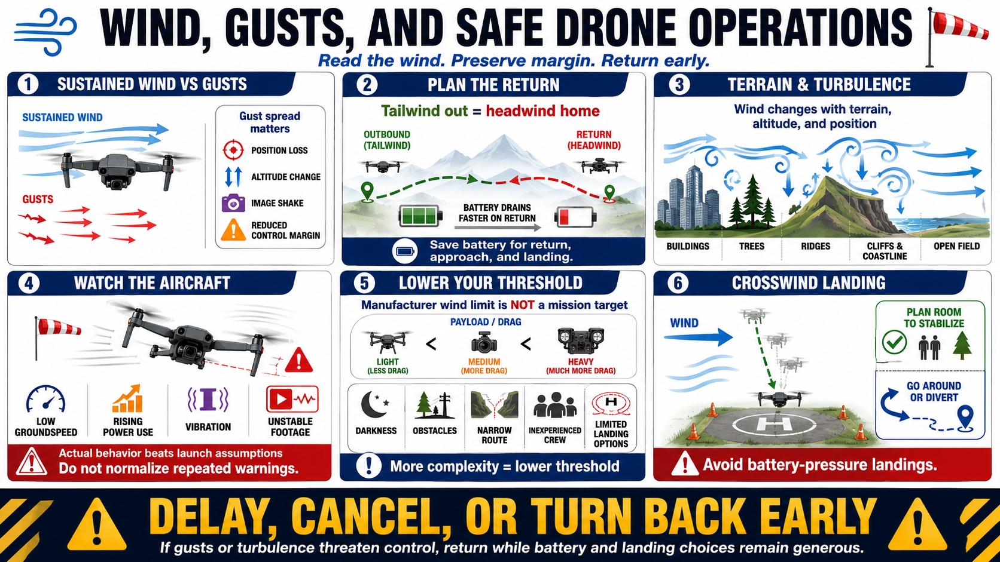

Wind, Gusts, and Turbulence
Connecting to LMS... Progress: in progress

Narration
Sustained wind is a more continuous flow, while gusts are shorter increases or shifts. Gust spread matters because an aircraft may appear stable between gusts yet briefly lose position, altitude, image stability, or control margin.
Plan outbound and return legs with direction in mind. A tailwind outbound may become a headwind home, reducing groundspeed and increasing battery demand. Reserve energy for changing direction, route adjustment, approach, and landing.
Airflow near buildings, trees, ridges, coastlines, cliffs, and terrain can accelerate, roll, descend, or become turbulent. Open fields can also experience strong gusts and thermal movement. Conditions vary with altitude and position.
Watch actual aircraft behavior. Increased tilt, poor position hold, low groundspeed, rising power use, vibration, or unstable footage can reveal conditions more severe than the launch area suggested. Do not normalize repeated warnings or control corrections.
Payload size and shape can increase drag and change response. Manufacturer wind figures are not mission targets. Darkness, obstacles, narrow routes, inexperienced crew, or limited landing options justify lower operational thresholds.
Crosswind during approach can also complicate landing near obstacles or people. Plan an approach direction with room to stabilize and go around or divert before battery pressure becomes urgent.
Cancel or delay when gusts or turbulence threaten stable control, safe return, or usable data. If conditions worsen in flight, turn back early while battery and landing choices remain generous.